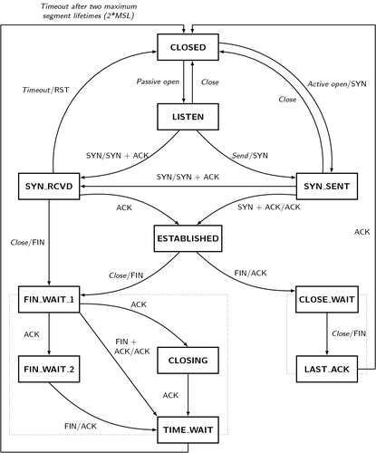
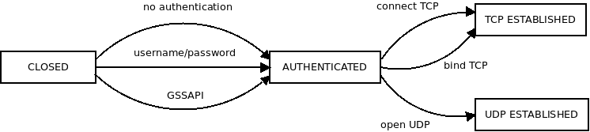

State machines are widely used to implement network protocols, or, generally, objects that have to react to external events.
Consider TCP state machine:

During its lifetime TCP socket moves throught different states in the diagram. When you start connecting it's in SYN SENT state, when the initial handshake is over, it's in ESTABLISHED state and so on.
And here's an interesting observation: The API of the socket changes as you move from one state to another. For example, it doesn't make sense to receive data while you are still connecting. But once you are connected, receiving data is all right.
To give a more illustrative example, have a look at SOCKS5 protocol. It's basically a TCP or UDP proxy protocol. It's used, for example, by Tor. It starts with authentication phase, supporting different kinds of authentication. Then it moves to connection establishment phase. Once again there are different ways to connect. You can connect to an IPv4 address, to a IPv6 address or to a hostname. Finally, the state machine moves to one of the working states. This can be a TCP connection or an UDP connection.

Note how API changes between the states. In CLOSED state you can call functions such as connect_unauthenticated or connect_password. In AUTHENTICATED state you can call connect_tcp, bind_tcp or open_udp. In TCP ESTABLISHED you can do normal stream socket operations, while in UDP ESTABLISHED you can do datagram operations.
This requirement of mutating API is at odds with how the state machines are normally implemented: There's a single object representing the connection during it's entire lifetime. Therefore, a single object must support different APIs.
What it leads to is code like this:
void Socks5::connect_tcp(Addr addr) {
if(state != AUTHENTICATED) throw "Cannot connect is this state.";
...
}
Which, let's be frank, is just an implementation of dynamically typed language on top of statically-typed one.
In other words, by implementing state machines this way we are giving up proper type checking. While compiler would be perfectly able to warn us if connect_tcp was called in CLOSED state, we give up on the possibility and we check the constraint at runtime.
This sounds like bad coding style, but it turns out that the programming languages we use fail to provide tools to handle this kind of scenarios. It's not network programmers who are at fault, but rather programming language designers.
The closest you can get is having a different interface for each state and whenever state transition happens closing the old interface and opening a new one:
auto i1 = socks5_socket();
auto i2 = i1->connect_unauthenticated(proxy_addr);
// i1 is an invalid pointer at this point
auto i3 = i1->connect_tcp(addr);
// i2 is an invalid pointer at this point
But note how ugly the code is. You have there undefined variables (i1, i2) hanging around. If you accidentally try to use them, you'll get a runtime error. And imagine how would the code closing the socket have to look like!
So you try to "undeclare" those variables, but the only way to do "undeclare" is it let the variable fall out of scope:
socks5_tcp_established *i3;
{
socks5_authenticated *i2;
{
auto i1 = socks5_socket();
i2 = i1->connect_unauthenticated(proxy_addr);
}
i3 = i1->connect_tcp(addr);
}
You've got what you wanted — only i3 is declared when you get to the end of the block — but you aren't better off. Now you have undefined variables at the beginning. And I am not even speaking of how ugly the code looks like.
Anyway, this rant is addressed to programming language designers: What options do we have to support such mutating API at the moment. And can we do better?
December 24th, 2018